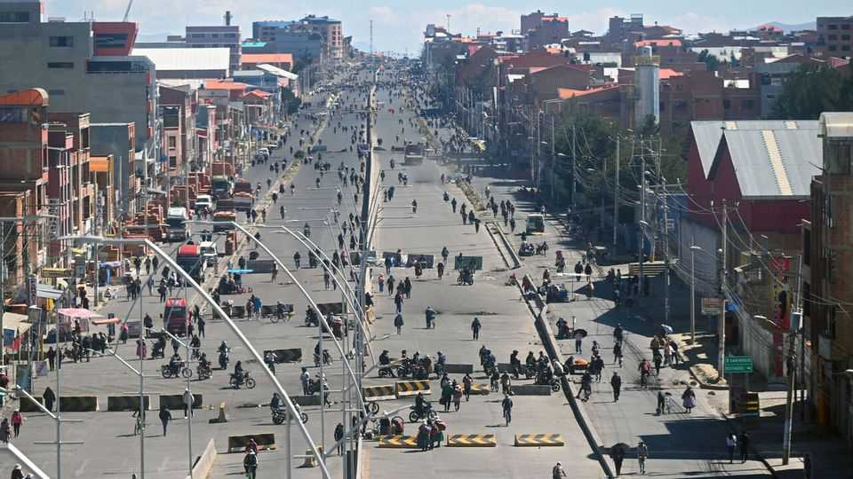

Protesters have controlled Bolivia’s capital for a month
To lift their blockades, they want the centrist president, Rodrigo Paz, to resign
June 4th 2026

When Túpac Katari, an indigenous leader, laid siege to La Paz for more than 100 days in 1781, the city folk were reduced to eating cats and dogs. La Paz today is not there yet. But its people are becoming increasingly desperate.
For a month protesters have blocked the roads into Bolivia’s seat of government. They are demanding that President Rodrigo Paz resign. The price of fresh food has doubled. Petrol stations have run dry. Businesses are closing. Hospitals are running out of oxygen. But the blockaders have refused even to sit down with the government. The calls for Mr Paz to impose order are growing.
Mr Paz came to power seven months ago, ending 20 years of almost uninterrupted rule by the Movement to Socialism (MAS). Voters ejected that party because of economic mismanagement that led to biting inflation and fuel shortages. Many former MAS voters were wooed by Mr Paz’s promise of gradual reform. But the economic problems have persisted. And those voters accuse Mr Paz of ignoring them since he took office.
As The Economist was published there were more than 80 blockades across the country. They are manned by the general workers’ union, peasant federations and followers of Evo Morales, a former president and a founding member of the MAS. Blockades are a controversial political tradition in Bolivia. The blockaders inflict pain on everyone to make themselves heard. And they have mechanisms that help them keep going. “They’re experts at cycling people in and out,” says María Teresa Zegada, a political analyst.

If Mr Paz can convince them to talk, he might make concessions. But he has little room for manoeuvre. Offering cabinet posts to their organisations would anger the middle class, who would see it as a return to the old ways of the MAS. Wage rises would add to the fiscal deficit, which is set to hit 9% of GDP this year. Bolivians fear a repeat of the 1980s, when the government printed money to meet union demands, triggering hyperinflation. “The dilemma is between inflation and governability,” says Gonzalo Chávez, an economist.
But at least the more radical protesters are refusing to engage in dialogue. At a meeting on June 2nd in El Alto, the largely working-class city adjacent to La Paz, their leaders slammed those suggesting negotiations as “traitors”, saying that the blockades would continue until Mr Paz resigns.
Exasperated citizens are starting to demand that Mr Paz use force. Some have taken it upon themselves to remove blockades, raising the possibility of street battles. Mr Paz sent police to clear the blockades around La Paz two weeks ago, but they were back the following day. The next move could be to declare a state of emergency and send in the army. The defence minister resigned on June 2nd without providing an official statement.
But there are unhappy precedents for breaking blockades with military force. When President Gonzalo Sánchez de Lozada sent soldiers to clear blockades in El Alto in 2003 and dozens of civilians were killed, it sparked a general strike that led to his resignation and exile. That is surely on Mr Paz’s mind. “They must have doubts,” says Gonzalo Colque, an economist. “Because the resistance of the people in the blockades would likely be iron.” ■
Sign up to El Boletín, our subscriber-only newsletter on Latin America, to understand the forces shaping a fascinating and complex region.